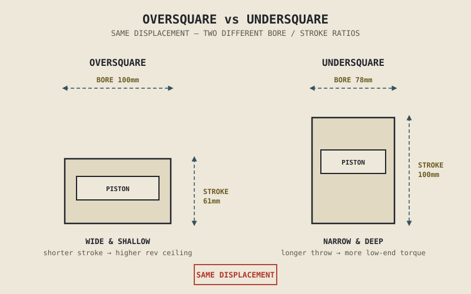

Two engines, both exactly 650cc, both parallel twins, both four-stroke. One redlines at 8,500rpm and delivers its power in a smooth, broad wave that peaks in the mid-range. The other redlines at 11,000rpm, feels comparatively unremarkable until well past half throttle, and rewards being revved out hard. Same displacement, same layout, same basic vocabulary from Chapter 1.5 — and yet these are, in almost every way that matters to how they actually ride, different engines. The difference is bore and stroke, and specifically, the ratio between them.
Chapter 1.5 introduced bore and stroke as vocabulary: bore is the cylinder's diameter, stroke is the distance the piston travels inside it. Chapter 2.5 added the mechanical detail that stroke is exactly twice the crank throw. This chapter puts those pieces together and asks the question those earlier chapters left open: given a fixed displacement, why would an engineer choose a wide bore and short stroke over a narrow bore and long stroke, or the reverse — and what does that choice actually cost?
The Same Displacement, Built Two Different Ways
Displacement is simply the cylinder's swept volume — how far the piston travels, multiplied by the cylinder's cross-sectional area, multiplied by however many cylinders share the job. Critically, that same total volume can be reached by many different combinations of bore and stroke. A cylinder with a wide bore and a short stroke and a cylinder with a narrow bore and a long stroke can displace the identical number of cubic centimetres while being, mechanically, almost opposite designs.
Engines are generally described by where they land on this spectrum. An oversquare engine has a bore larger than its stroke — wide and shallow. An undersquare engine has a stroke longer than its bore — narrow and deep. A square engine has bore and stroke roughly equal. None of these is simply "the right way to build an engine of a given displacement." Each one trades away something specific in exchange for something else, and the rest of this chapter is about naming those trades explicitly.

Two cylinders of identical displacement drawn side by side — one wide and shallow (oversquare), one narrow and deep (undersquare) — with bore and stroke dimensions labeled on each.
Why Oversquare Engines Tend to Rev Higher
A shorter stroke has two compounding effects that both push toward higher safe RPM. First, recall from Chapter 2.5 that the piston's speed constantly changes through the stroke, reaching zero at TDC and BDC and its maximum somewhere in between — and a shorter stroke simply means the piston has less physical distance to cover in each revolution, which keeps its peak speed lower at any given RPM than a longer stroke would produce. Engineers track this directly as mean piston speed, and it turns out piston speed, not RPM by itself, is one of the fundamental mechanical limits on how fast an engine can safely spin — beyond a certain piston speed, the accelerations described in Chapter 2.5 become destructive regardless of how strong the materials are. A shorter stroke buys headroom against that limit, letting the engine reach a higher RPM before piston speed becomes the constraint.
Second, a larger bore leaves more physical room at the top of the cylinder for valves — directly connecting to Chapter 2.6's discussion of valve size and count. More valve area supports the higher airflow that Chapter 2.3's volumetric efficiency needs at high RPM, and Chapter 2.7 already established that high-RPM breathing is exactly what an aggressive, long-duration camshaft is built to exploit. Bore, valve size, and cam aggressiveness aren't three independent decisions — an oversquare engine's wide bore is what makes room for the large valves and aggressive cam timing that let it actually use the high RPM its shorter stroke makes mechanically possible.
Why Undersquare Engines Tend to Feel Torquier
A longer stroke means a longer crank throw, and Chapter 2.5 already established the crank throw's role: it's the lever arm the piston's push acts through to produce rotation at the crankshaft. A longer lever arm, for the same combustion pressure pushing on the same size piston, produces more twisting force — more torque — at the crankshaft. This is a direct mechanical consequence of leverage, not a vague trend; it's the same reason a longer wrench turns a stubborn bolt more easily than a short one, with combustion pressure standing in for your hand's push.
This is why undersquare engines are so often associated with strong low-RPM torque and an unhurried, easygoing feel — and why they're common in cruisers, touring bikes, and engines built to pull confidently from low in the rev range rather than reward being revved out. The trade, following directly from the previous section in reverse, is that the longer stroke drives up piston speed faster as RPM rises, arriving at the same mechanical piston-speed ceiling at a lower RPM, and the narrower bore leaves less room for the large valves that would support strong high-RPM breathing even if the piston speed allowed it.
Bore and stroke aren't just two numbers that multiply out to a displacement figure. They're a lever-arm-versus-rev-ceiling trade, decided once at the factory, that shapes almost everything about how an engine actually feels to ride.
A Common Misconception, Cleared Up Early
Chapter 1.6 warned against treating displacement as a simple scoreboard, and this chapter's opening example shows exactly why in the sharpest possible terms: two engines can share an identical displacement figure and still be fundamentally different machines, because displacement alone says nothing about how that volume was built — wide and shallow, or narrow and deep. Comparing two bikes purely on their cc figure, the way Chapter 1.6 already cautioned against doing with peak power, misses one of the single biggest factors in how an engine will actually feel: not how much volume it displaces, but how it's shaped internally to do it.
Where This Leads
Bore and stroke describe the cylinder's physical dimensions, but they don't, on their own, determine how tightly the mixture inside gets squeezed before ignition — that's a separate design choice, layered on top of bore and stroke rather than determined by them. Chapter 2.9 turns to that choice directly: compression ratio, the last of the core engine-geometry numbers this book set out to cover, and the one most directly tied to the knock threshold Chapter 2.4 already introduced.
Key Concepts to Remember
- Displacement is a single number that can be reached through many different bore-and-stroke combinations — the ratio between them, not the total, determines much of an engine's character.
- Oversquare engines (bore larger than stroke) generally support higher RPM ceilings, since a shorter stroke reduces mean piston speed at a given RPM and a wider bore makes room for larger valves.
- Undersquare engines (stroke longer than bore) generally produce stronger low-RPM torque, since a longer crank throw acts as a longer lever arm, converting combustion pressure into more twisting force at the crankshaft.
- Mean piston speed, not RPM alone, is a fundamental mechanical limit on how fast an engine can safely spin — bore and stroke choices directly set how quickly that limit is reached.
- Two engines can share an identical displacement figure and feel completely different to ride, because displacement says nothing about how that volume is shaped internally.
Cross-References
| ← Ch. 1.5 | Introduced bore and stroke as vocabulary; this chapter gives both their full engineering treatment. |
| ← Ch. 2.5 | Established that stroke is twice the crank throw, and that the crank throw acts as a lever arm; this chapter shows how that lever arm directly produces the torque difference between undersquare and oversquare engines. |
| ← Ch. 2.6 | Connected valve size to high-RPM breathing; this chapter shows how bore size is what makes that breathing physically possible in the first place. |
| ← Ch. 1.6 | Warned against treating a single spec figure as the whole story; this chapter applies that warning directly to displacement. |
| → Ch. 2.9 | Compression ratio, the remaining core dimension of engine geometry layered on top of the bore and stroke described here. |